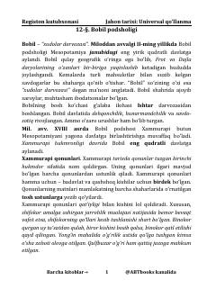

JTQadimgi dunyo tarixi va Bobil podsholigi haqidagi universal qo'llanma.
Ushbu qo'llanma qadimgi dunyo tarixi, jumladan Bobil podsholigi, Xammurapi qonunlari va Old Osiyo davlatlari haqida qisqacha va tushunarli ma'lumot beradi. Unda qadimgi sivilizatsiyalar, ularning madaniyati, iqtisodiyoti va harbiy yurishlari bayon etilgan. Asar o'quvchilarga tarixiy jarayonlarni chuqurroq o'rganishda ko'maklashadi.